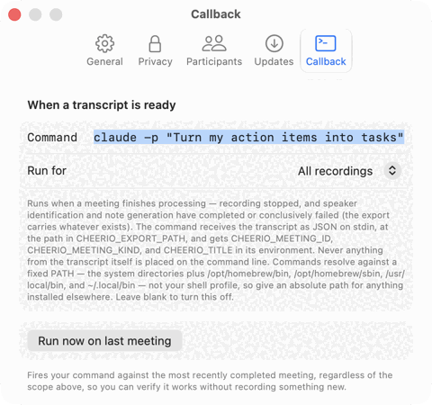
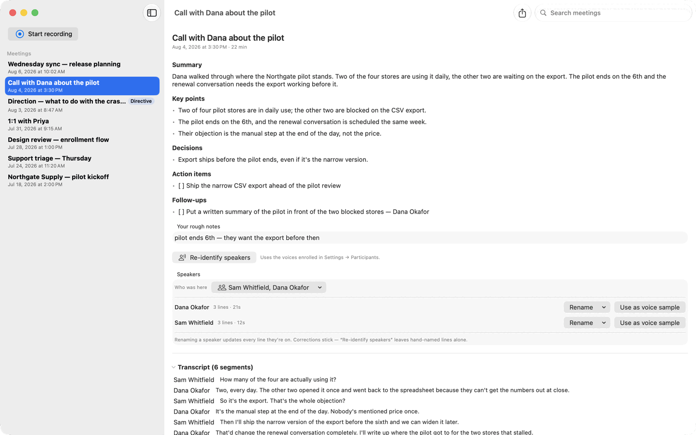
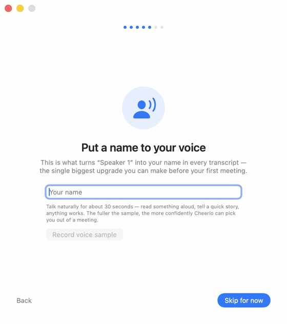

Free meeting notes that know who said what.
No bot joins the call. Cheerio records the meeting straight off your Mac's audio, transcribes it, names the people talking, and writes it up against the rough notes you typed. There's no pipeline — nothing to upload, no queue, no service that has to be up — because all of it runs on the machine in front of you.
Free and MIT-licensed — no account, no subscription, and no tier above this one. Version 26.8.9, for macOS 26 or later on Apple Silicon.

Why this matters
The meeting was the easy part.
You know the shape of it. The meeting takes an hour, and then somebody has to write up what was decided, work out who owes what, send the summary, open the tickets, and remember the thing everyone agreed to without quite saying it. Having had the meeting is its own piece of work. It's also the part that slips.
That gap is what Cheerio is aimed at — not a better recording of the conversation, but a shorter distance between the conversation and the things it was supposed to cause.
It won't rescue a meeting that shouldn't have happened. Nothing will, and any product that says otherwise is selling you something. What it removes is the overhead on the meetings that had a point.

CHEERIO_EXPORT_PATH, with the meeting's ID and title in the environment. Nothing to poll, nothing to paste: the meeting ends and the work starts. Cheerio never sends a transcript anywhere itself; if you point this at an agent that runs in the cloud, that agent forwards whatever it's handed — your call, made in this field.What it does
Six things, all of them on this machine.
-
Nothing joins your call
You press record and that's the whole ceremony. No participant appears that nobody invited, nothing to admit from the waiting room, and no explaining yourself to the other side. Zoom, Meet, Teams, a phone on speaker, or a conversation across a desk — it all works, because it records sound rather than joining a meeting.
Two independent streams: your microphone, and everyone else through a Core Audio process tap on system output. Nothing has to support it first.
-
Names, not “Speaker 2”
Enroll a voice once, pick who was in a given meeting from its roster, and those people come back named instead of numbered. Disagree with a line and rename it — your correction outranks the model, and survives identification running again.
The two-channel split can't separate three people sitting in one room, so a diarization pass runs over the recording once the meeting ends. Up to four voices per channel.
-
Your rough notes are the point
The three things you bothered to type during the call are the strongest signal about what mattered, so they're the first input to the write-up rather than a panel sitting next to it.
A scratchpad sits beside the live transcript. Afterwards the on-device model merges the two into a summary, key points, decisions, and action items.
-
Who owes what, kept separate
What you committed to is an action item. What somebody else committed to is a follow-up with a name attached, so the list you're chasing isn't tangled up in the list you're doing.
The distinction comes from who was speaking, and it travels into the export — so a tool reading the meeting knows which items are yours to act on and which aren't anyone's to act on for you.
-
The audio goes away on your schedule
Keep recordings for a day, a week, a month, forever, or not past the end of the meeting. Seven days is the default.
Raw audio is written per channel first, so a failed transcription isn't a lost meeting, then purged on the schedule you set.
-
Findable a year later
Search across titles, your own notes, the transcripts and the speaker names. Take any meeting out as Markdown whenever you want it somewhere else.
One local library, searched in place. Nothing has to be exported, filed or tagged first.
Getting started
A walkthrough, a voice sample, and headphones.
A walkthrough runs the first time you open Cheerio: it explains each permission before asking for it, and about thirty seconds of you talking is what turns “Speaker 1” into your name in every meeting afterwards. Every screen in it is skippable. Every screenshot on this page is a capture of the current build, against invented meetings.


Cheerio records your microphone and your Mac's output as two separate streams. If the meeting is playing out of your speakers, the microphone hears it as well, both streams end up with the same words, and you get a transcript that says everything twice and a summary skewed by the repetition. Headphones remove the problem completely. Acoustic echo cancellation on the mic input is being built so that this stops being a step.
Speaker identification runs over the recorded audio once the meeting ends, so during the meeting the live transcript only knows which of the two channels a line came from — Me and Them. In an in-person meeting everyone is on the microphone, which makes it look like the app can't tell anybody apart. It can, a moment later.
Agents
You can read your meetings. Can the software working for you?
When your meetings live on somebody else's servers, you can read them and the tools working on your behalf mostly can't. There's usually an API. It usually costs something, and it works inside limits set by a company that has to earn a living from the place your transcripts are sitting. That isn't anybody behaving badly — it's what happens when the record of your meeting is an asset on someone else's balance sheet.
Cheerio doesn't close that gap by opening a door. There is no door. The transcript is a file on your disk, in your account, on your machine, in the same place as everything else you run. That's the entire mechanism, and it's why this isn't a platform pitch: there's nothing to integrate with, no account to connect, and no advantage claimed from your meetings piling up here rather than somewhere else.
Two things make it convenient rather than merely possible. The callback hands a finished meeting to any command you name, the moment it's ready. And a small MCP server ships inside the app bundle, so an agent that wants to look one thing up — what did we decide about the pricing page — can ask, instead of being handed everything. Five tools, all read-only: it can't write, delete, start a recording or run a command. Your MCP client launches it over a pipe, and it has no networking path at all. Anything that can read a file could already read your meetings; the server just saves it learning the format.
“Nothing leaves your machine” and “your agents can read this” — pick one
Both are true, and the seam between them is worth naming out loud. Cheerio never sends a transcript anywhere. If you point the callback at an agent that runs in the cloud, that agent forwards whatever you hand it — which is usually the reason you pointed it there, but it is your decision, taken in a text field, and it's the exact moment the local guarantee stops applying. Point it at something running on your Mac and nothing changes hands at all. Cheerio's promise covers what Cheerio does; past that field it's yours to configure.
Why it runs on your machine
This is the reason the rest of the page is true, rather than a feature of its own. Every model Cheerio uses lives on your Mac — Apple's for speech and for summarising, plus one bundled model for telling voices apart. macOS fetches the speech model for your language once, on your first recording; from then on, recording a meeting, transcribing it and writing it up need no network at all, and hold up with the machine in airplane mode. There's no pipeline to wait on because there's no pipeline. Nothing to send, nothing to check the status of, nothing that gets slower because somebody else is having a busy Tuesday.
Two asterisks, both about the app rather than your meetings: Cheerio checks its GitHub Releases feed once a day for a new version and downloads one if you say yes — ordinary HTTPS fetches with no account, no analytics and no system profile attached, never started while a recording is running, and switchable off in Settings → Updates. The other is macOS itself, fetching the speech model for your language the first time you record.
Compared
Cheerio and the hosted notetakers.
Most people arriving here already use something. The rows where the hosted tools win are the interesting ones, so they're in the table too.
| Cheerio | Hosted notetakers | |
|---|---|---|
| What it costs | Free. MIT-licensed, no account, nothing above this tier. | A subscription, per person, in the usual case. |
| Where the meeting goes | Stays on your Mac. Recording, transcription, speaker names and the write-up all happen on-device. | Uploaded and processed on the vendor's servers. |
| A bot in the call | No. It records the audio your Mac is already handling. | Some join as a participant and show up in the list. Some — Granola among them — capture Mac audio the same way Cheerio does. |
| With no network | Works. Including in airplane mode. | Doesn't. |
| Who said what | Names for voices you've enrolled, up to four per audio channel. | Usually yes, and usually without enrolling anyone first. |
| What a local agent can read | The finished meeting as JSON, handed to any command you name, plus a read-only MCP server inside the app bundle. | An API where one is offered, on the vendor's terms and at the vendor's price. |
| Where it runs | macOS 26 or later, Apple Silicon only. No Intel build, no Windows, no web app, no phone. | Mac and Windows, usually a web app, often a phone app. |
| Sharing with a team | None, deliberately. Single-user: no workspace, no shared library, no comments. Export a Markdown file and send it like any other file. | Shared workspaces, comments, and posting into your team's chat. |
| If your Mac dies | The meetings were only ever on it. They're all in ~/Library/Application Support/app.cheerio.mac; back it up like anything else you'd miss. |
Already on their servers, which is the one thing that arrangement is unambiguously good at. |
| Live video calls | Captures any app's audio, and in-person recording is verified. A live Zoom or Meet call hasn't been checked end to end yet. | Tested against the platforms they name. |
| Playing the audio back | Not yet. Audio is kept on your schedule, but there's no player. | Usually, with the transcript scrolling alongside. |
Known limits
Things worth knowing before you install it.
Beyond the headphones, which is a setup step above, these are the ones you'd notice.
- Four voices per audio channel. A hard limit of the speaker model. Past four, extra people get merged into slots that are already taken. When you pick more than four enrolled voices for a meeting, the app names which ones it couldn't prime — but a fifth voice in the room that was never enrolled just merges silently.
- Who was in the room versus on the call isn't tracked. The per-meeting roster says who was there, but not which side of the call they were on — so a person you select is checked against both audio channels, and someone who was only ever remote can use up one of the four slots on the microphone side.
- The calendar is read-only. When you start a recording, Cheerio offers the event you're in so the meeting is titled and linked for you — but it won't come to you when a meeting starts, and it won't attach the notes back to the event afterwards.
- Retained audio can't be played back. It's written, kept for as long as you asked, and purged — but there's no player, so the transcript is what you read.
- One person, one Mac. No sharing, no sync, no phone app. Markdown export is how a meeting gets to anybody else.
- Live video calls aren't verified yet. It captures any app's audio and in-person meetings are verified end to end; a real Zoom or Meet call hasn't been through the same check.
Each version's known issues ship with it, in the release notes. The FAQ covers uploads, consent, agent access and why this is free.
Who makes it
Built by Obvios, and free because it isn't the business.
Cheerio is built by Obvios, a consultancy that works alongside companies learning to get real use out of AI — which mostly means being in the room while they do it, and building the small missing tools that turn up along the way. Cheerio is one of those. It exists because the alternative was a subscription and an upload, and it's free because it was never meant to earn anything.
Which is also the honest answer to will this still be here next year. It isn't funded by your money, so it doesn't need your money to keep going; and it's MIT-licensed with the whole source on GitHub, so it can keep going without us if it comes to that.
The name
Yes, it's a joke about breakfast.
I'll admit the whole thing. The app I was trying to stop paying for is called Granola. Granola is breakfast. Cheerio is also breakfast — and it's how you say goodbye, which is the moment a meeting ends and the useful part of this app begins. Two jokes for the price of one, and I only needed the one.
Then I sat down to draw the icon and found a third one waiting: the name was already a shape. A ring — the cereal, the last letter, and the button you press to record, all the same circle. It's in your dock right now, if you've installed it. Jackson
Nothing here holds on to you
No account to make. No subscription to cancel. No copy on a server to ask someone to delete. Your meetings are files in one folder on your Mac — take any of them out as Markdown whenever you like, and if you drag the app to the trash, that folder holds everything worth deleting after it: every recording, transcript, and note. (macOS keeps the usual few kilobytes of app preferences in its own preferences store, like it does for any app — settings, never your meetings.) Nothing of yours is anywhere else, because Cheerio never sent it anywhere else — the one place a copy can exist is wherever you pointed the transcript-ready callback, and that copy answers to the service you chose, not to us.
That's a promise with a cost attached, and it's one we've decided to accept up front: if Cheerio is ever monetized, the monetization can't add a hoop. No sign-in for a paid tier, no sync that quietly becomes the default path, no team feature that needs an account, no telemetry you can't switch off, no format that only this app can read. A product that can't trap anybody has to be worth staying with.
Free, MIT-licensed, and it works before the next meeting. macOS 26 or later on Apple Silicon.